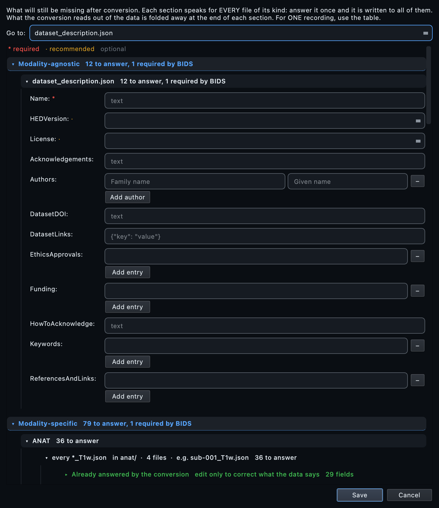

MRI, start to finish.
Three Siemens DICOM folders that are not three subjects. This is the dataset the general walkthrough uses, chosen because every datatype in the workflow appears in it at least once: anatomical, functional, diffusion, fieldmaps, and the physiological signals the scanner stored inside the DICOM files.
The GUI walkthrough explains each control once, for every modality. This page covers what is specific to MRI, and what this dataset in particular is there to teach.
Oldenburg neuroimaging unit (3 folders, 2 subjects)
Three source folders. The first two,
OL_0001 and
OL_0002, share a patient identifier and
collapse into sub-001 with
ses-pre and
ses-post. The third,
OL_0003, is a different person and
stands alone as sub-002 with no
session. 394 DICOM files, 3T Prisma.
Three folders, two subjects.
What this dataset is here to teach
Folder names are not subject identities. Somebody named these folders in the order the scans happened, and a tool that trusts folder names would produce three subjects from two people. That is not a hypothetical: it is the single most common way an MRI dataset comes out wrong, and it is silent, because three subjects is a perfectly valid BIDS dataset.
Subjects come from the DICOM header, not the folder.
The scan reads each folder's DICOM files and groups them by the patient identifier and patient name the scanner wrote, which is a fact about the person rather than a fact about how the export was organised.
-
OL_0001andOL_0002share a patient identifier, so they are one subject. The study dates order them, and the earlier becomesses-pre, the laterses-post. -
OL_0003is a different identifier, so it is a second subject. It has one visit, so no session entity is written: a session number that only ever takes one value adds nothing and clutters every filename.
Sessions come from the study identifier and date in the same way. This is the MRI counterpart of the path heuristics EEG and MEG have to fall back on, and it is more reliable, because it is reading what the scanner recorded rather than what somebody typed.
id column anyway.
Grouping is only as good as the identifiers. A site that reuses a patient identifier between people, or anonymises everyone to the same value, will produce one subject where there should be many. The column is editable for exactly this reason.
Scan the folder.
Create a project, point Raw input at the top of the tree, and press Scan. Every DICOM file is opened and its header read: the acquisition parameters, the study and series identifiers, the patient identifiers used to group subjects, the timestamps, and whether there is image data inside at all.
You get 33 rows. Twenty-one are keepers and twelve are skipped automatically: the localisers the scanner takes before the real acquisitions, and the report objects it writes alongside them. Both are recognised and set aside rather than deleted, and any of them can be re-included with a click.
Leave probe convert on
With probe convert enabled, the scan additionally runs the converter once per series and reads the sidecar it produced. That is how the tool knows, before you have typed anything, which metadata fields the conversion will answer by itself. Those fields are then shown to you as already answered rather than asked for. On this dataset it adds around twenty-five seconds and saves a great deal of typing.
Read the inventory.
One row per series. Before changing anything, read what the scan decided, and pay attention to three things in particular.

The conf column
Each classification carries a confidence score. A high value means the converter's own guess and the schema agreed. A lower one means the decision came from a sequence-name rule, which is a good guess about a naming convention rather than a fact. Sort by confidence and read the bottom of the list: that is where a misclassification will be if there is one.
The sequence column, beside the predicted name
The original scanner label sits beside the BIDS name the row will
produce. Reading the pair is the check.
ses-pre_task-rest_bold next to a sequence
called rest is right;
task-rest next to a sequence called
localizer is not.
Rows the scan set aside
A dimmed row is excluded. A teal row with a crossed-circle badge is
something with no image data inside it at all, a Siemens
TENSOR map or a
PhoenixZIPReport, which cannot be converted
by anything and is excluded with the reason shown. That distinction
matters: without it, an unconvertible object looks exactly like a
failed conversion of something that mattered.
Curate.
The decisions on an MRI dataset are mostly about what to leave out and what to call things.
Exclude what should not be in the dataset
The scan already excluded what it could recognise. What it cannot know is that the second T1w was the one worth keeping because the subject moved during the first, or that a run was aborted and repeated. Untick the include box on those.
Give the tasks real names
Task labels come from the sequence names, which means they inherit
whatever the protocol was called on the console. Check them for
consistency above all: task-Rest in one row
and task-rest in another produces two tasks
in a dataset that has one, and no validator will object.
Teach the scanner your site's conventions
If your protocol names something in a way the classifier does not recognise, and it will happen on your own data even though it does not happen here, add a rule in Settings rather than editing rows every time you scan. A hint forces any series matching a pattern to a datatype, suffix and task you choose. An exclusion drops anything matching a name or path. Both are constrained by the schema, saved with the project, and read by the command line through the same file.
The metadata, and how little of it MRI needs.
MRI is the modality where the file answers the most. Echo time, repetition time, flip angle, field strength, coil, phase encoding direction, slice timing: all of it is in the DICOM header, and the conversion reads it. This is why there is no MRI-specific metadata block to fill in, and why the template's MRI sections are mostly the green already-answered kind.
What remains is about the study rather than the acquisition:
- The dataset fields. Name, authors, licence, acknowledgements, funding. Nothing in a DICOM file knows any of these, and a dataset without authors is the most common thing wrong with published BIDS data.
- Task descriptions. What the participant was asked to do, and the instructions they were given. Recommended by the standard and impossible to derive.
-
Participant information. Sex, age and handedness
reach
participants.tsv. Age and sex are read from the DICOM header where present; handedness never is, and is never guessed.

Convert.
Open the BIDS preview in the bottom panel and read the tree it will
produce. Then press Run conversion. Image series go to
dcm2niix; the physiological logs go to
bidsphysio. You do not choose: the row's
content does.
On this dataset: 21 NIfTI files across anatomical, functional, diffusion and fieldmap, one physiological table, and 28 sidecars. No failures.
Residual outputs, dropped by default
dcm2niix sometimes splits one series into the real image plus derived
single-volume copies. They have names like
..._bolda or
..._Eq_, and they are almost never wanted:
left in place they double the apparent number of runs. They are dropped
by default, and a setting keeps them if your workflow needs them.
Fieldmap, complex-valued and multi-output diffusion series are not
affected.
What happens after the files are written.
Two MRI-specific repairs run automatically once the conversion is done, and both fix things that are valid BIDS and useless.
Fieldmaps that point at something
A fieldmap without IntendedFor is
structurally valid and no pipeline can use it, because nothing says
which images it is meant to correct. The enrichment fills it in from
what the scan measured: which functional and diffusion runs sit in the
same session with matching acquisition parameters.
The reversed-direction volume becomes a fieldmap
On sub-002 there is a single-volume
diffusion acquisition with reversed phase encoding. It is not diffusion
data in any useful sense: it exists to serve as the reference for
distortion correction. The classifier recognises it and routes it to
the fieldmap folder with the right suffix, so the pipeline that needs it
can find it. No configuration file, and nothing for you to do.
The physiological recordings inside the DICOM files
Siemens scanners record respiration, cardiac and pulse-oximetry signals alongside the images and store them inside the DICOM data. Those become BIDS physiological files, compressed tables with their own sidecars, beside the functional run they were recorded with. They are easy to miss entirely, because nothing in the folder looks like a physiological recording.
Look at the images.
Open the dataset in the Editor and click a converted image. It opens in the viewer: one plane at a time, or Multi-Planar for sagittal, coronal and axial sharing a single crosshair, where clicking or dragging in any plane moves the other two.

TODO values are the fields no
file could supply, and they are left visible on purpose.
Check a functional run's time course
A 4-D file gains a Graph tab: click a voxel and see its value across every volume. Drift, spikes and motion are visible here in seconds, and it is worth doing on at least one run per session before you consider the conversion finished.
And in three dimensions
The 3D tab renders the volume on the graphics card: rotate it, zoom, and cut through it with an oblique clipping plane whose cut face shows the slice underneath. It is the quickest way to spot a coverage problem or a wrap that is hard to see slice by slice. On a machine without suitable graphics support the tab is simply absent and the rest of the viewer works normally.
Validate.
Press Validate dataset. On this dataset: 55 clean files, 7 warnings, no errors. The warnings are the two kinds you should expect from MRI. The dataset-level fields, licence and authors, which are about your study. And the task descriptions and instructions on the functional sidecars, which are about your experiment. Both are things only you can supply, and both are answered in one pass.
Each finding names the schema rule it came from, so a requirement can be checked against the standard rather than taken on trust, and the fix button takes you to the field that needs the answer.


rules.tabular_data.modality_agnostic.Scans,
is where the requirement comes from, and Highlight in
editor tints the offending cell in the table.


The fast pass reads names and metadata. Deep checks additionally opens the NIfTI image headers, which is what catches a truncated or corrupt image. A structurally perfect dataset containing one unreadable volume passes every other kind of check.
Real numbers from this dataset.
21 keepers across both subjects, 12 skipped automatically: localisers, report objects and calibrations. With probe convert on, about 25 seconds.
21 NIfTI files across anat, func, dwi and fmap, one physiological table from the embedded log, and 28 sidecars. No failures.
No errors. The 7 warnings are placeholders in licence and authors, plus task descriptions and instructions on the functional sidecars.
From the command line.
# 1. Create the dataset and its project. bidsmgr-create ~/bids/neuroimaging_unit --name "Neuroimaging unit" # 2. Scan. 33 rows, 12 skipped. --probe-convert costs ~25 s and # saves a great deal of metadata typing later. bidsmgr-scan ~/raw/neuroimaging_unit \ --project ~/bids/neuroimaging_unit --probe-convert # 3. Convert. 21 images plus one physiological table. bidsmgr-convert --project ~/bids/neuroimaging_unit # 4. Enrich: fieldmap IntendedFor, scans tables, participants. bidsmgr-metadata --project ~/bids/neuroimaging_unit --fill-todos # 5. Validate. 55 ok / 7 warn / 0 err. bidsmgr-validate ~/bids/neuroimaging_unit
Site-specific classifier rules written in the interface are read here
too, with --rules-file. Every flag is
documented in the CLI reference.
What usually goes wrong with MRI.
| What you see | What it means |
|---|---|
| Three subjects where you expected two | The patient identifiers did not match, usually because the
site anonymises per export. Edit the
id cells; the grouping is a
starting point, not a verdict. |
| One subject where you expected many | The opposite: a reused or blank identifier. The same fix. |
| A series classified as something it is not | Read the conf column. A low value means a name-based
guess. Correct the row, and if it will recur, add a scan rule so
the next scan gets it right. |
| A teal row with a crossed circle | An object with no image data inside:
TENSOR, a report, a spectroscopy
frame. Nothing can convert it. It is excluded on purpose, with
the reason shown. |
| Far more runs than you acquired | Residual single-volume copies from dcm2niix were kept. They are dropped by default; check the setting. |
A fieldmap with no IntendedFor |
Nothing matched it: usually the parameters differ from every candidate run, or the fieldmap sits in a different session. Set it by hand in the Editor. |
| Two task names that differ only in case | Two tasks, as far as BIDS and every downstream pipeline are concerned. Fix it before converting; bulk edit does it in one move. |
Next
The advanced MRI tutorial takes a richer protocol: several anatomical contrasts, scanner-derived diffusion maps, and a physiological log that fails at source. The multimodal tutorial shows MRI converting alongside PET, EEG and MEG in one pass.